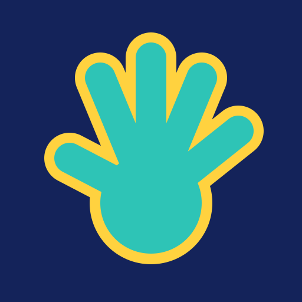

Puente de Señas
Conversar entre señas y vozLa cámara mira las manos y reconoce las señas.
El video no se envía a ningún lugar: todo se procesa en este dispositivo.
Lo que dicen las manos
Tu respuesta, en señas
Las palabras con borde punteado todavía no tienen seña guardada: se muestran escritas, o deletreadas si ya enseñaste el abecedario.
Enséñale una seña a la app
Escribe la palabra o letra y haz la seña cinco veces frente a la cámara. La app guarda el movimiento de las manos para reconocerla y un video corto para responder con ella.
Señas guardadas
Un puente entre señas y voz
- Enseña las señas. En “Mis señas”, una persona que sepa lengua de señas graba cada seña cinco veces. Empieza por las más usadas: hola, gracias, sí, no, ayuda, nombre, y el abecedario.
- Entender. La persona sorda hace señas frente a la cámara. La app las reconoce, arma la frase y la lee en voz alta.
- Responder. Escribe o dicta tu respuesta. La app la muestra seña por seña con los videos guardados; lo que no tenga seña lo deletrea o lo muestra escrito en grande.
Importante. La app no trae señas de fábrica: reconoce únicamente las que se le enseñan, tal como se usan en tu comunidad (por ejemplo, la Lengua de Señas Colombiana). Sigue las manos, no las expresiones de la cara ni la gramática completa de la lengua, así que sirve para conversaciones sencillas y no reemplaza a un intérprete en trámites médicos, legales o de emergencia.
Consejos: buena luz, fondo sencillo, las manos completas dentro de la imagen y la misma distancia que usaste al enseñar la seña.